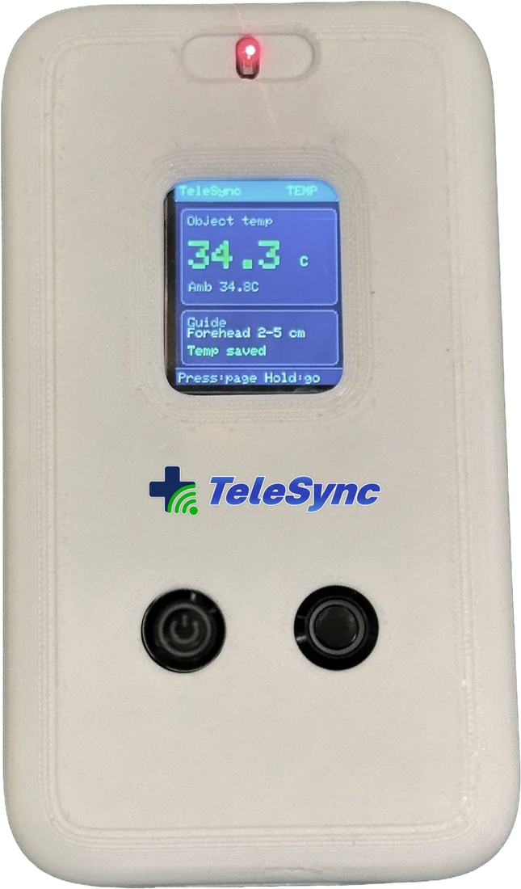
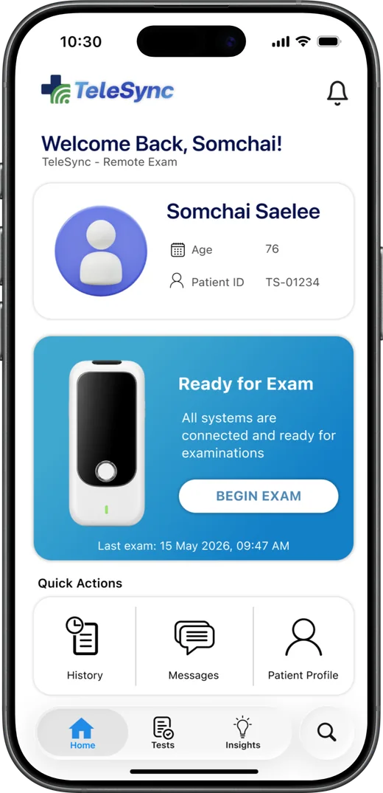
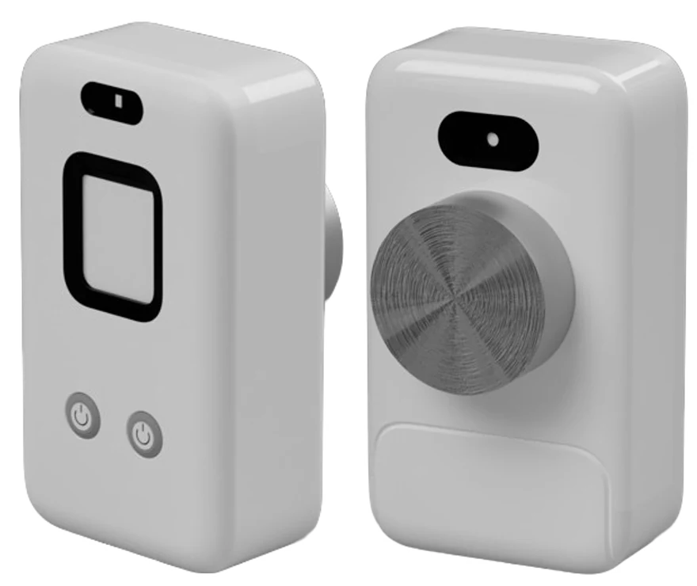
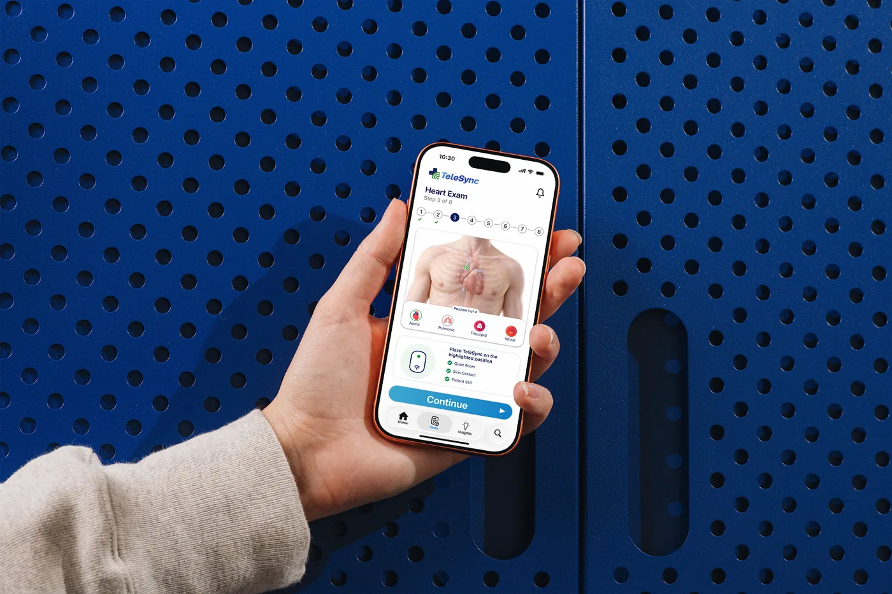
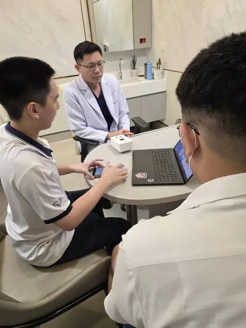
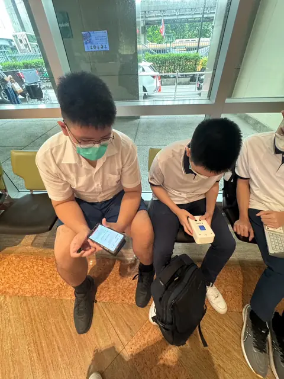
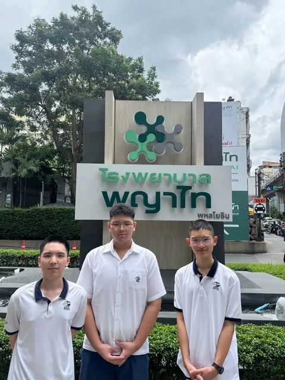

The Future of Telemedicine
A portable clinical examination device and guided app that bring heart sounds, lung sounds and vital signs into every remote consultation
Patent Pending
What is TeleSync
TeleSync is a portable clinical examination system that turns an ordinary video call into a real check-up. A pocket-sized device captures heart and lung sounds, SpO₂, heart rate, temperature and blood pressure, while a step-by-step mobile app guides patients and caregivers through each measurement. The results reach clinicians through a doctor dashboard, so remote decisions are based on objective data, not just descriptions.
Learn More

Examine. Guide. Review.
Three parts work together to carry a physical examination from the patient’s home to the clinician’s screen.
Portable examination device
A compact unit with a stethoscope module and sensors for SpO₂, heart rate, temperature and blood pressure.
Guided mobile application
Step-by-step instructions in English and Thai, with emergency support when readings are critical.
Doctor dashboard
Vital signs, recorded sounds, alerts and uploaded files in one place for remote review and follow-up.
Why it matters
More than half of the world’s population cannot consistently obtain the care they need, and the people who could provide it are concentrated far from rural communities. Telemedicine was meant to close that distance, yet a standard video call is communication without examination: it cannot capture heart sounds, lung sounds, blood pressure or oxygen saturation. Clinicians are left relying on verbal descriptions, and signs of deterioration can be recognised too late. TeleSync is built to change that.
Learn More

Our Progress
 In the field
Hands-on with cliniciansWe took the working prototype into hospital consultation rooms
In the field
Hands-on with cliniciansWe took the working prototype into hospital consultation rooms

Clinical review
Final checks App walkthrough
App walkthrough

The teamTeleSync has moved from concept to a working first prototype, with the device designed in Autodesk Fusion and the app designed in Figma. In early consultations at a hospital, all four healthcare professionals we spoke with, two doctors and two nurses, responded positively to the concept. Next comes technical and usability validation, followed by a hospital pilot. A patent application is pending.
Learn MoreTry the TeleSync app flow
Walk through the full eight-step remote examination, from symptoms and vital signs to heart and lung recordings, in our interactive Figma prototype.
Open in Figma